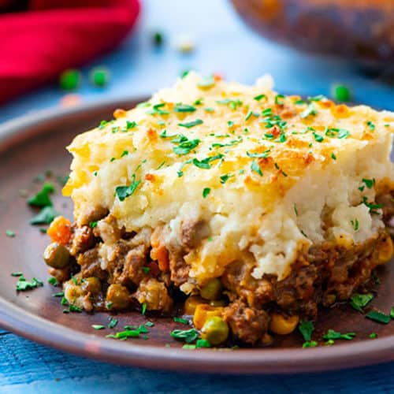

<ion-header>
  <ion-toolbar class = "test">
    <ion-buttons slot="start">
      <ion-back-button class = "buttoncolor"></ion-back-button>
    </ion-buttons>
    <ion-title>Recipes</ion-title>
  </ion-toolbar>
</ion-header>

<ion-content class = "backgroundcolor">

  <ion-list class = "backgroundcolor">
    <ion-radio-group [(ngModel)]="myStatus">
      <ion-item class = "backgroundcolor">
        <ion-avatar slot = "start">
          
        </ion-avatar>

        <ion-label class = "textcolor">Lasagna</ion-label>
        <ion-radio value ="Lasagna"></ion-radio>
      </ion-item>

      <ion-item class = "backgroundcolor">
        <ion-avatar slot = "start">
          
        </ion-avatar>

        <ion-label class = "textcolor">Shepherds Pie</ion-label>
        <ion-radio value ="Shepherds Pie"></ion-radio>
      </ion-item>


      <ion-item class = "backgroundcolor">
        <ion-avatar slot = "start">
          
        </ion-avatar>

        <ion-label class = "textcolor">Chicken Broth</ion-label>
        <ion-radio value ="Chicken Broth"></ion-radio>
      </ion-item>


      <ion-item class = "backgroundcolor">
        <ion-avatar slot = "start">
          
        </ion-avatar>

        <ion-label class = "textcolor">Beef Stew</ion-label>
        <ion-radio value ="Beef Stew"></ion-radio>
      </ion-item>


      <ion-item class = "backgroundcolor">
        <ion-avatar slot = "start">
          
        </ion-avatar>

        <ion-label class = "textcolor">Stir-Fry</ion-label>
        <ion-radio value ="Stir-Fry"></ion-radio>
      </ion-item>

      <ion-item class = "backgroundcolor">
        <ion-avatar slot = "start">
          
        </ion-avatar>

        <ion-label class = "textcolor">Pasta-Bake</ion-label>
        <ion-radio value ="Pasta-Bake"></ion-radio>
      </ion-item>

    </ion-radio-group>
  </ion-list>

  <ion-button (click)="onSave()">Save</ion-button>


</ion-content>
